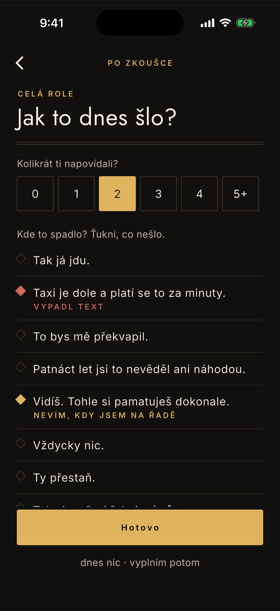
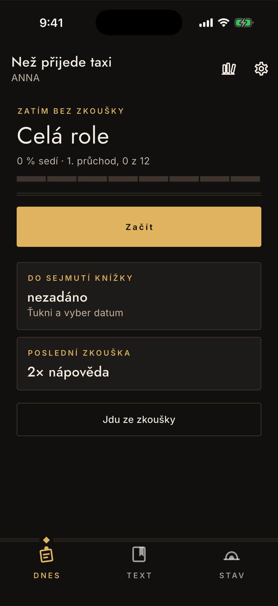
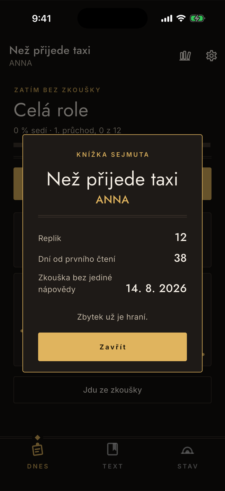

Po zkoušce
Záznam po zkoušce a nápovědy
Je půl jedenácté večer, jdete ze šatny a máte na to půl minuty. Celá obrazovka je postavená na tom: žádné dialogy, žádné potvrzování, jen ťukání palcem. Co si tady zapíšete, rozhodne o tom, co vám dril příští den nabídne — a je to jediné místo v aplikaci, kde se pozná, že text spadl na jevišti, ne u stolu.
Kde to je a co je zdarma
Na domovské obrazovce, tlačítko Jdu ze zkoušky úplně dole. Vedle něj je karta Poslední zkouška s počtem nápověd.
Sběr po zkoušce a křivka nápověd jsou funkce plné verze. Import, čtečka i dril zůstávají zdarma navždy — bez plné verze se ale dril počítá jen z toho, jak vám text jde u stolu, protože jevištní pád se nemá kde vzít.
Půl minuty
Kolikrát ti napovídali a kde to spadlo
Nahoře šest tlačítek s počtem nápověd, pod nimi repliky. Ťuknutí na repliku cykluje tři stavy: nic → vypadl text → nevím, kdy jsem na řadě → a zase zpátky. Nic se nepotvrzuje, nic se neptá podruhé.
Nejdřív nápovědy
Nula až pět a víc. Je to jediné číslo v aplikaci naměřené na jevišti, ne u stolu — proto se sbírá i ve chvíli, kdy nemáte sílu procházet repliky.
Pak jen to, co nešlo
Repliky, kterých se to netýká, necháš být. Aplikace se neptá, co se zkoušelo — ví to z rozsahu, který máš zadaný u příští zkoušky, takže nabídne repliky z něj. Když rozsah nemáš a role je dlouhá, ukáže pětadvacet replik, které jsou v učení nejslabší; projíždět dvě stě řádků po zkoušce by nikdo nedělal.
Nemáš náladu? dnes nic · vyplním potom
Úniková cesta je vidět schválně. Obrazovka, která nepustí ven, je obrazovka, kterou si přestanete otvírat — a pak nejsou žádná data.

Co se stane potom
Dril to vezme v potaz hned
Označené repliky spadnou v postupu dolů a vrátí se dřív. Pád na jevišti přitom váží dvakrát tolik co zapomenutí u stolu a navíc replice zavře cestu mezi zvládnuté, i kdyby jinak byla plná.
Počet nápověd zůstane na kartě
Na domovské obrazovce se ukazuje poslední zkouška a pod ní předchozí hodnota, takže je vidět směr. Klesající řada nápověd je to nejpoctivější měřítko, které o roli máte.
Zapisuje se po každé zkoušce
Jedna zkouška je jeden záznam. Nic se nepřepisuje ani nesčítá do průměru — zajímá vás poslední stav, ne statistika.
Na procento to nesahá
Kolik už umíte, se počítá z drilu. Záznam po zkoušce mění, co vám dril nabídne, ne jak si stojíte. Vysvětluje to stránka o postupu.

Sejmutí knížky
Okamžik, který se nedá prohlásit
Když po zkoušce ťuknete na nulu nápověd poprvé, aplikace to pozná sama a ukáže kartu. Není to odznak za píli — je to zápis o tom, co se stalo: zkouška, na které vám nikdo nemusel napovídat.
Bere se z dat, ne z tlačítka
Nikde se sejmutí knížky nezadává a drilem se nedá vyfarmit. Musí přijít zkouška bez jediné nápovědy.
Na kartě jsou skutečné veličiny
Počet replik role, dny od prvního čtení, datum. Žádné body, žádná série.
Zůstane v kartě role
Datum se propíše do archivu, takže i po letech víte, jak dlouho vám ta role trvala. Popisuje to stránka o knihovně.

Na co se ptají
Musím projít celou roli?
Ne. Aplikace nabídne jen to, co se zkoušelo — podle rozsahu, který máte zadaný u příští zkoušky. Když rozsah nemáte a role má přes pětadvacet replik, ukáže se pětadvacet nejslabších. Procházet dvě stě replik po zkoušce by stejně nikdo nedělal.
Zapomněl jsem to vyplnit hned po zkoušce
Nevadí, zapište to ráno. Záznam se neváže na čas — váže se na to, co si pamatujete. Když už si nevzpomínáte na jednotlivé repliky, zapište aspoň počet nápověd; sám o sobě má cenu.
Jaký je rozdíl mezi „vypadl text" a „nevím, kdy jsem na řadě"
První je o textu, druhý o narážce — stáli jste připravení, ale ušel vám okamžik, kdy máte začít. Jsou to dvě různé vady a učí se každá jinak, proto je aplikace vede zvlášť. Narážky bývají druhá vlna potíží: text už umíte a spadnete na nástupu.
Bez plné verze se jevištní pád zapsat nedá
Ano, a je dobré to vědět předem: tahle obrazovka je jediný vstup jevištních pádů. Bez ní dril pracuje jen s tím, jak vám text jde u stolu — na naučení to stačí, jen o té vrstvě navíc neví. Nedostupné je i rozlišení „sedí = zvládnuto a ani jednou nespadlo na jevišti".
Proč tu nejsou žádné odznaky ani série
Protože zkoušíte pod tlakem a odměna za sedm dní v řadě by vám k roli nepomohla. Aplikace ukazuje jen skutečné veličiny: kolikrát vám napovídali, kolik replik sedí, kolik dní zbývá do sejmutí knížky. Nic z toho se nedá vyhrát pilností, jen odehrát.
Proč se vůbec ptáme na nápovědy
Protože je to jediné číslo, které vzniklo na jevišti a ne u stolu. Doma si každý text „umí"; teprve zkouška ukáže, kolikrát se muselo pomoct. Klesající řada nápověd je poctivější odpověď na otázku „jsem připravený?" než jakékoli procento — a je to zároveň to, co se dá říct režisérovi.
Půl minuty je záměr, ne úspora
Kdyby vyplnění trvalo pět minut, nevyplníte to. A obrazovka, kterou nikdo neotvírá, nesbírá nic — takže by se dril nikdy nedozvěděl, co spadlo na jevišti. Proto tu není pole na komentář ani hodnocení zkoušky: co se dá odvodit z čísel, se neptá.
Nesedí vám něco kolem záznamu po zkoušce?
contact@lukashula.cz